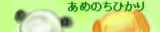

リンク トップ＞リンク
Panpease Records
2003年7月23日に発売されたコーネリアスのアルバム『PM』（コーネリアスの楽曲「Point」を様々なアーティストがリミックスしたもの）に、
我らがPanpease Recordsの運営者、シュウロことPanpeaseこと駄目な僕のトラックが収録されています。曲順は7曲目、アーティスト名はなんとPanpease Records！
長らく死んでいたと思ったら、はてなのほうへ移転したそうで。
Cornelius
OOPS!
ばいぶらWeb
曲が聴けます落とせます、ばいぶら公式Webサイト。
muzie:Panpease Records
内田雄一郎氏私設ファンサイト みりたマ
内田氏公認！ うちだファンによる、うちだファンのための…以下略。（相互リンク許可をいただきました。本当にありがとうございます！）
ねらーず・ねりすとろじー
2ちゃんねるまとめサイト。
ケータイゲーム会社｜アルティ公式ホームページ
PSP『ワールド・ネバーランド～ククリア王国物語～』UMDパッケージ版発売のお知らせが掲載されてます。
Warp
エレクトロニック・ミュージックの老舗WARP RECORDSのサイト。
Seefeel - Facebook Page
どうやらPolyfusiarecordsは再開しないようなので、復活したSeefeelのFacebookページにリンク変更。
WIRE13（ワイアーサーティーン）｜2013.09.14(SAT) YOKOHAMA ARENA
リンク更新忘れてた……今年は9月か。
文芸ジャンキー・パラダイス
圧巻の一言。ジョジョ立ちコーナーは必見！
幻想世界小辞典-世界の神話のデータベース
あめのちひかり
あらら、リンク死んでますね……
午後十一時劇場
こちらもリンク死んでます……
空手チョップをもう一度。TOPへ
はてなブックマークの情報を読み込んでいます。